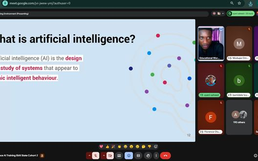
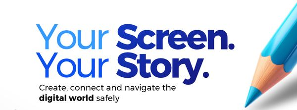

| October at NerdzFactory CompanyAt NerdzFactory Company, we use social innovation, technology, and human capital development to support people, businesses, and communities. This month, we're sharing a closer look at our digital skills training through the Design & Digital Marketing School, our work to promote safer digital spaces through SafeOnline, and other initiatives in development. We invite you to explore the work, the people it serves, and the opportunities we're creating for learning, growth, and collaboration. | On the Ground | Design & Digital Marketing School (DDM): Cohort 3 BeginsThe Design & Digital Marketing School Lagos Programme, delivered in partnership with the Lagos State Employment Trust Fund (LSETF) and the German Development Cooperation (GIZ), is training 100 Lagos State youths aged 18–35 in digital marketing and graphic design. Now in its third cohort, the programme equips young people with practical skills to pursue employment and other career opportunities in the digital economy. Building on the progress of previous cohorts, the current training continues NerdzFactory’s work to expand access to digital skills and support young people on their career journeys. |
|  | SafeOnline: Young People Teaching Young PeopleSafeOnline 2026 is putting young people at the centre of digital safety education. Through its Youth Track, NerdzFactory trains selected young people as peer educators, leading sessions for teenagers aged 13–17 in schools and community spaces. The programme goes beyond online safety awareness. Teenagers learn to recognise digital risks, build healthier screen-time habits and engage with artificial intelligence (AI) responsibly through peer-led AI Literacy Circles. By equipping young people to teach their peers, SafeOnline builds digital safety, AI literacy and healthier digital habits that extend beyond individual training sessions. |
|
| NerdzFactory by the NumbersDDM 75% placements facilitated as a proportion of participants trained across Cohorts 1 and 2. |
| 93% programme completion rate across Cohorts 1 and 2. |
| 100 participants in Cohort 3. |
|
Safe Online | 50 | Youth Track participants
Young people equipped to promote digital safety and AI literacy among their peers. |
|
| What’s Ahead | Strengthening Teachers’ Digital LiteracyThrough our partnership with the Raspberry Pi Foundation and Google DeepMind on the Experience AI programme, NerdzFactory is expanding its work to help teachers build the digital skills they need in today’s classrooms. The training will reach 4,000 teachers across Lagos, Ogun, Oyo, Ondo and Ekiti States, covering essential digital skills and introducing them to artificial intelligence (AI) and how it can be used in learning. This will also include 500 Special Needs teachers, who will receive training tailored to their classroom needs, alongside assistive learning resources to help students with additional learning needs participate more fully in digital education. |
| Preparing Young Women for Digital CareersNerdzFactory is preparing to deliver digital skills and employability training for young women aged 18–35 under the Technology Talent Services (TTS) Nigeria programme. The training will focus on Digital Marketing and Data Analytics, combining practical exercises and projects with workplace and employability skills. Delivery is planned across Lagos and Ogun States, helping participants build relevant competencies and prepare for opportunities in Nigeria’s growing business process outsourcing (BPO) and digital services sectors. Through this work, NerdzFactory aims to help young women move beyond learning new skills to becoming better prepared for employment. |
|
 | Your Screen, Your Story: Promoting Safer Digital ExperiencesThrough MTN Nigeria’s Help Children Be Children (HCBC) initiative, NerdzFactory is preparing for Your Screen, Your Story, a virtual event focused on helping children and young people navigate the digital world safely and responsibly. The 2-hour interactive event will bring together young people, parents, guardians and educators to explore topics including cyberbullying, artificial intelligence, online privacy and digital wellbeing. The programme will feature expert discussions, interactive sessions and practical guidance for building safer online habits. | The event is scheduled for Saturday 12th December 2026 at 10:00am WAT | | |
|
| In the NewsNerdzFactory and Meta Equip Parents and Guardians with Digital ToolsThe Nation featured NerdzFactory Company and Meta’s work to help parents and guardians build the knowledge and confidence to support safer online experiences for children. The coverage highlights our commitment to digital safety education and helping families navigate the challenges children face online. | Staying ConnectedAt NerdzFactory Company, we work with people, businesses, and organisations to create opportunities through technology, skills development, and social innovation. If our work aligns with your interests or priorities, we'd love to connect. Explore our programmes, learn more about what we do, and discover opportunities to work together. Let's explore what's possible.Visit www.nerdzfactory.co to learn more about our work. | | The NerdzFactory Social Impact Newsletter is a monthly look into the programmes, people and communities at the centre of NerdzFactory Company’s work. |
|